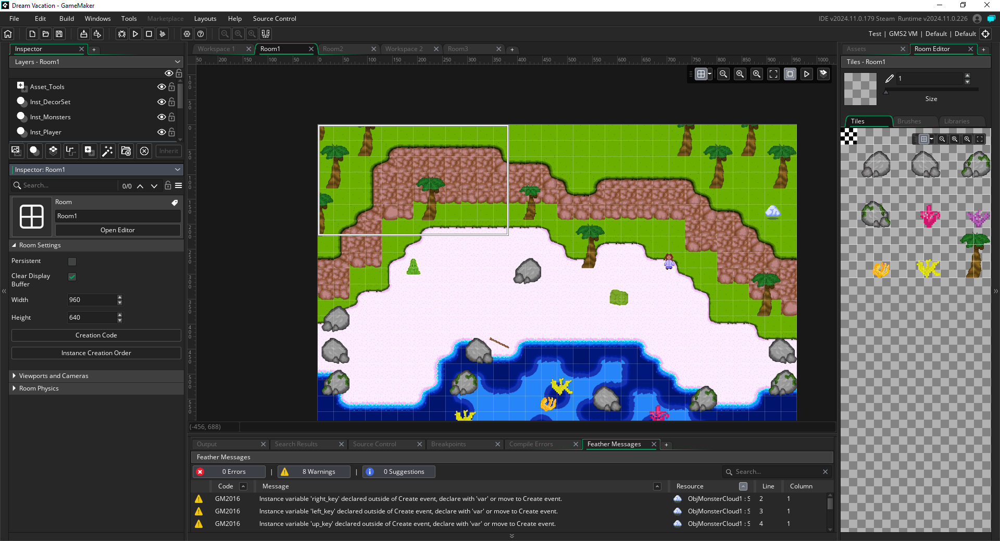
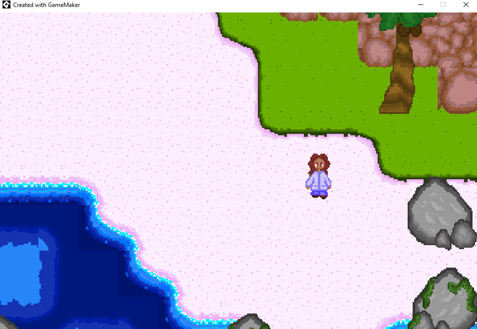
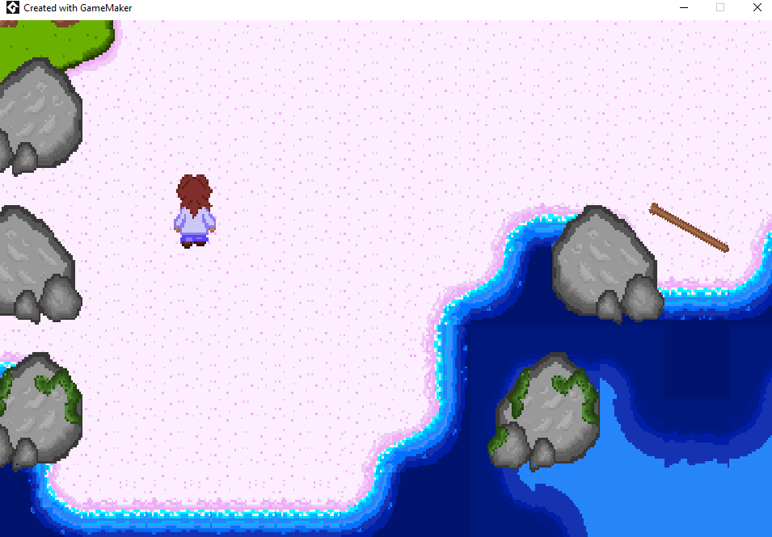

You’re stranded on a small desert island, each day you can scavenge for food like coconuts and fruit. You can also craft tools to help with other tasks, like a spear to catch fish in the shallow waters. After the first night you hear some scary noises and discover a small cave nearby with monsters. Prompted to learn a new crafted tool you make a simple knife and fight the monsters that woke you up. After learning more tools and fighting the monsters in the cave, you can defeat the final boss monster and it will follow you as a pet. After gaining it’s favor by giving it it’s favorite treat (a fish) it will give you a small bottle with a new crafting recipe. This crafting recipe will teach you how to make a simple boat to go to the next nearest island. Once you’ve collected all the parts you need and craft the boat you have the option to move to the next island. Your first boat will have a 50% chance of breaking after you reach the new island, if it doesn’t break you can use it to go back to the previous island still with a 50% chance of breaking until it breaks. If it breaks at the previous island, you will have to build it again to go to the new island #2.
After getting to the second island, you have access to more materials, crafting recipes, foods, and monsters. Same concept to go to the 3rd island, each new boat you learn will have a higher success rate of staying intact, until the final island where you can make a boat that won’t fall apart. At which point you can easily access all islands.
Try out the game below:
If the game does not load, click here to play the game in a new window.
Here are some screenshots of the game:
  This section outlines the development of the game:
Check out a video of the game in action: